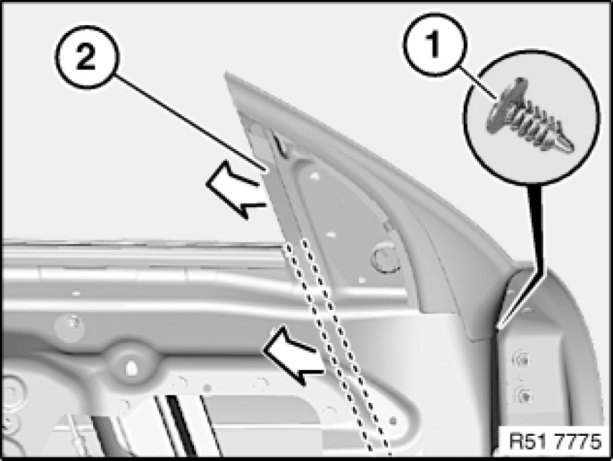
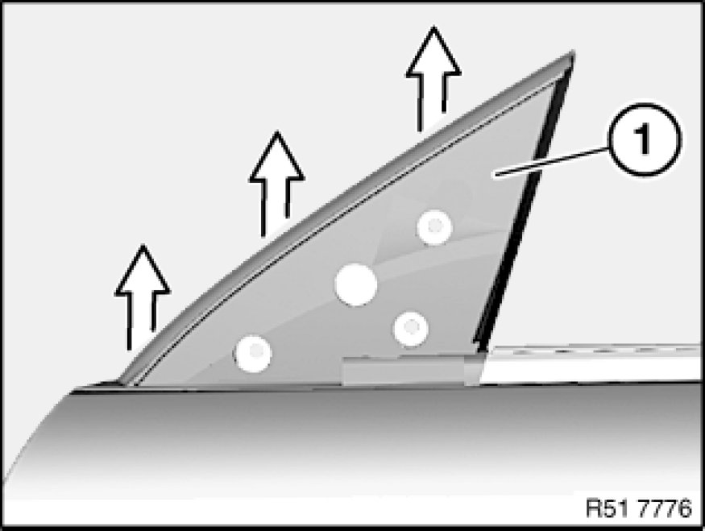
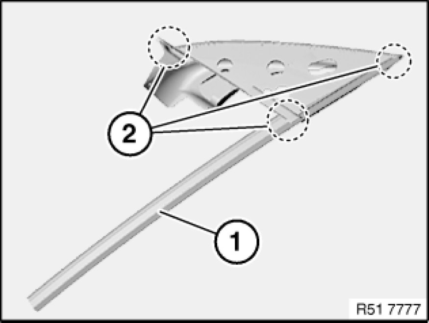

51 32 211 Replacing Front Left or Right Rubber Guide For Left or Right Door Window
51 32 211 - Replacing front left or right rubber guide for left or right door window

Necessary preliminary tasks:
- Remove rear-view mirror Removing and Installing/Replacing Mirror on Left or Right Front Door on front door
- Remove door window glass Service and Repair
Important!
The "Instructions on fitting window guide seals" serve as the basis for this repair instruction and must be observed without fail.

Detach rubber guide (2) at clip/mounting (1).
Pull rubber guide (2) out of window guide rail.
Installation:
Moisten rubber guide (2) prior to fitting with approved anti-friction agent.
Correctly insert rubber guide (2) at front/bottom into window guide rail.

Remove rubber guide (1) in direction of arrow from front door.

Installation:
Rubber guide (1) must not be damaged in corners (2).